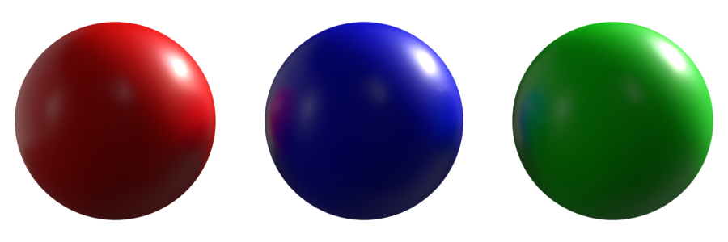
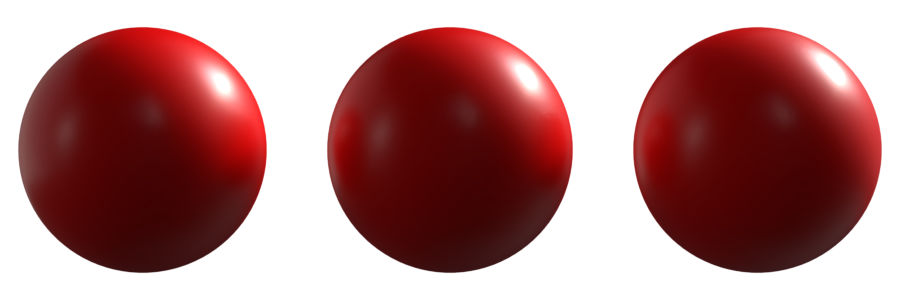

How to use Handlers
We introduced the PrimHandler and StageHandler objects in the Main Concepts chapter, now we will see how to edit their properties like attributes and metadata.
Properties
Properties are dispatched in four different categories, depending on their uses : Attributes, Metadata, Aliases and Relationships.
Inspect object properties
Inspecting a Prim is the first thing you may want to do if you want to know its properties.
PrimHandler.inspect() lists all the different properties of a PrimHandler and group them by property type.
# inspect the material properties
red_material.inspect()
Result:
PrimHandler:
# below properties are Aliases
type: Material
name: red
path: root/materials/red
custom data: {}
variant_sets: {}
variant_selections: {}
references: []
payloads: []
current frame: nan
Metadata :
.displayName
.typeName
.documentation
.specifier
Attributes :
.inputs.uvtranslation
.outputs.volume
.outputs.surface
.outputs.adobe.surface
.inputs.uvrotation
.inputs.baseColor
.inputs.uvscale
.inputs.diffuseColor
.outputs.displacement
Relations :
Note
You can also display the properties values with PrimHandler.inspect(display_values=True)
Similarily to PrimHandler, you can also inspect scene properties with StageHandler.inspect() and display values with StageHandler.inspect(display_values=True).
# inspect the shader attribute
my_scn.inspect()
Result:
StageHandler:
filename:
sublayers: []
Metadata :
Attributes
In SSCA, each attribute of an object is an AttrHandler which holds a value. You can access an attribute handler by using the dot “.” operator of the PrimHandler or StageHandler:
# create a solid color material
mat = material.create_solid_color(main_scene, "red", (1.0,0.0,0.0))
print(mat.inputs.baseColor)
>>>
<AttrHandler(inputs.baseColor) object at 0x2f6e5538970>
Notice that this only returns the AttrHandler. In order to obtain the value it holds, you’ll have to use .get() on it.
print(mat.inputs.baseColor.get())
>>>
(1.0,0.0,0.0)
Note
In the above example, .inputs is an intermediate AttrHandler acting as a namespace.
Consider it like a “group name” that regroup attributes sharing a common concept.
Note that in some cases intermediate AttrHandler will also have values you can access with the methods described in this chapter.
In a similar manner, .set() method must be used to set the attribute value.
mat.inputs.baseColor.set((1.0, 1.0, 0.0))
Warning
The given value type must be compatible with the attribute. An error will be raised if the value is not compatible.
.set_default() and .get_default() can get an set values at the default timecode, i.e, outside any sampled values / animation.
my_obj.displayColor.set_default((0.0, 0.0, 0.0))
default_color = my_obj.displayColor.get_default()
.clear() clears any authored value on the attribute.
my_obj.displayColor.clear()
print(my_obj.displayColor.get())
>>>
()
Important
StageHandler doesn’t have USD attributes but have Metadata, we will see in another chapter how to handle Metadata edition.
User Properties
.create_user_property(name, type_mapping) allows users to add custom attributes to an object.
As the created property is an AttrHandler, you can access the new attribute with all the methods mentionned above.
from substance3d.api.core import type_mapping
my_obj.create_user_property("foo", type_mapping.Str)
my_obj.userProperty.foo.set("bar")
print(my_obj.userProperty.foo.get())
>>>
bar
Note
As user properties are also AttrHandler, they can be used in attribute connections as well (see the related chapter on this page).
Properties without AttrHandler
Only attributes use AttrHandler. Other properties like aliases (e.g :.custom_data) or metadata (e.g :.documentation) are accessed differently. We’ll discuss further about those properties in the next sections.
Metadata
StageHandler and PrimHandler can have metadata. Unlike attributes, metadata values are obtained using directly the dot “.” operator of the handler.
Available metada can always be checked with .inspect().
# create a cube
my_cube = primitive.cube(my_scn)
# edit its "kind" metadata
my_cube.kind = 'group'
Warning
If you try to edit a non-existing metadata in PrimHandler or StageHandler, a warning will be logged and the metadata will be treated like a classic python property. While this property can still be accessed in the python session, it will NOT be saved in the USD document (see example below).
# Non-existing metadata created like this will not be saved into the USD document...
my_scn.foo = 'bar'
# ...but will still be accessible during the python session.
print(my_scn.foo)
>>>
bar
In order to add custom data into your scene, you will have to use .custom_data alias,
as described in the next chapter.
Aliases
Aliases are properties that can’t be assigned a new value. However, even though mutables like variant_sets and
variant_selections can’t be re-assigned a new value, they are still editable, and SSCA modules
like variant and scene will facilitate those edits.
Custom Data
Custom data can be added using PrimHandler and StageHandler .custom_data alias (dict).
As Custom Data are saved within the usd file, this is a convenient way to share informations between softwares.
# add a new key value to the customData of my_cube
my_cube.custom_data['new'] = 'foo'
# add a new key value to the customLayerData of my_scene
my_scene.custom_data['new'] = 'foo'
Relationships
Relationships are attributes that have connections with other Prims.
The most used relationship is .material.binding that, as its name suggests, indicates with what materials the Prim is bound.
.add() adds a single object to the Relationship list.
card.material.binding.add(sphere_ball_mat)
.set() sets the Relationship list with the mentionned object list.
card.material.binding.set([sphere_ball_mat, rect_mat])
.remove() removes target object from the Relationship list.
card.material.binding.remove(rect_mat)
.clear() removes all objects from the Relationship list.
card.material.binding.clear()
.get() gets the Relationship list with objects as paths.
card.material.binding.get()
>>> ['/world/sphere/mat']
.get_target_objects() gets the list with objects as PrimHandlers.
card.material.binding.get_target_objects()
>>> [PrimHandler<'/world/sphere/mat'>]
Attribute Connection
Attribute connections are used to bind an attribute with the value of another attribute of the same PrimHandler or another.
Example Scene
We’ll start from the scene below and use it in the next sections to explain the use of attribute connections.
# Scene Creation
main_scene = scene.new()
root = primitive.xform(main_scene, "root")
my_colored_sphere_01 = primitive.sphere(root)
my_colored_sphere_02 = primitive.sphere(root)
my_colored_sphere_03 = primitive.sphere(root)
# Translating the first sphere to the left and the third to the right
transform.translate(my_colored_sphere_01, (-1.0, 0.0 ,0.0))
transform.translate(my_colored_sphere_03, (1.0, 0.0 ,0.0))
# Material creation
red_mat = material.create_solid_color(main_scene, "red", (1.0,0.0,0.0))
blue_mat = material.create_solid_color(main_scene, "blue", (0.0,0.0,1.0))
green_mat = material.create_solid_color(main_scene, "green", (0.0,1.0,0.0))
# Assign Material on each sphere
material.assign_to_objects(red_mat, my_colored_sphere_01)
material.assign_to_objects(blue_mat, my_colored_sphere_02)
material.assign_to_objects(green_mat, my_colored_sphere_03)
At this point, the scene will look like this :
Making connections
.connect() links the current AttrHandler value to the value of the AttrHandler passed in arguments.
# Connecting blue and green material basecolor to red material basecolor
blue_mat.inputs.baseColor.connect(red_mat.inputs.baseColor)
green_mat.inputs.baseColor.connect(red_mat.inputs.baseColor)
On the image below, the spheres still have three distinct materials (red, blue and green), but their color is now driven by the red material baseColor.
If we change the baseColor value of the red material, the connected attributes of the other materials will perceive that change.
# Changing red material color to purple
red_mat.inputs.baseColor.set((1.0, 0.0, 1.0))
Warning
Even if the attribute is connected to another, .get() will NOT return the connected value.
.get() will always return the actual value of the attribute, even if it has an existing connection,
which can lead to confusion.
# Checking blue material actual color
print(blue_mat.inputs.baseColor.get())
>>>
# Actual value of attribute is (0,0,1)(blue), even if the connected value is purple (1,0,1).
(0.0, 0.0, 1.0) # <- NOT the connected value
A good practice would be to .clear() the attribute value in order to hint that it’s connected to another attribute.
blue_mat.inputs.baseColor.clear()
print(blue_mat.inputs.baseColor.get())
>>>
() # Hint that there may be a connection
Getting connected value
We saw earlier that .get() returns the actual value of an attribute, even if a connection to another AttrHandler exists.
In order to get the connected AttrHandler value, we will use .get_connected_value().
# Checking connections on the blue material baseColor attribute
print(blue_mat.inputs.baseColor.get_connected_value())
>>>
(1, 0, 0) # Red color as expected
If you need to get/know the connected attribute, you can use .get_connected_attr() or
.get_connected_path().
# Get the connected AttrHandler
print(blue_mat.inputs.baseColor.get_connected_attr())
>>>
<AttrHandler(inputs.baseColor) object at 0x1b8de64c220>
# Get the connected attribute path
print(blue_mat.inputs.baseColor.get_connected_path())
>>>
/materials/red.inputs:baseColor
Note
.get_connected_path() is also useful to check if a connection exists.
None is returned if no connection is found.
Clearing a connection
A connection can be cleared using .clear_connection()
# Clears the green material color connection
green_mat.inputs.baseColor.clear_connection()
Inspect scene trees
.tree() is another helpful Handler’s method that will allow you to quickly print a scene hierarchy tree :
# inspect the scene tree
my_scn.tree()
>>>
puffy_jacket.usd
├── men_puffy_jacket_root
│ ├── pocket_zipper_left_mesh
│ │ └── Mesh_003
│ ├── lock_zipper_mesh
│ │ └── Mesh_005
│ └── center_zipper_mesh
│ └── Mesh_015
└── Camera
└── Camera_001
.tree() is also available for PrimHandlers, the result being a subtree with the object as root:
# inspect the object tree
my_obj.tree()
>>>
pocket_zipper_left_mesh
└── Mesh_003